Votre piscine, dessinée ici. Construite par nos équipes.
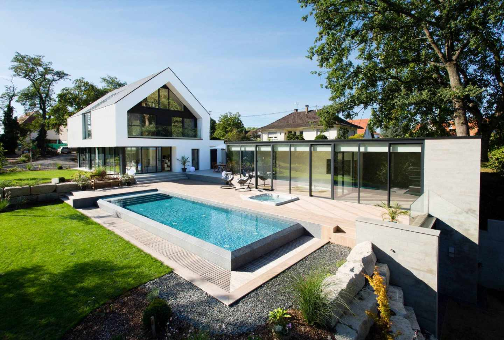
Bureau d'études intégré Aucune sous-traitance Garantie décennale AXA- Palmarès
- Depuis
- 1976
- Gérants
- Jeannine & Thierry Winé
- Showrooms
- Geispolsheim (67) · Houssen (68)
- Avis Google
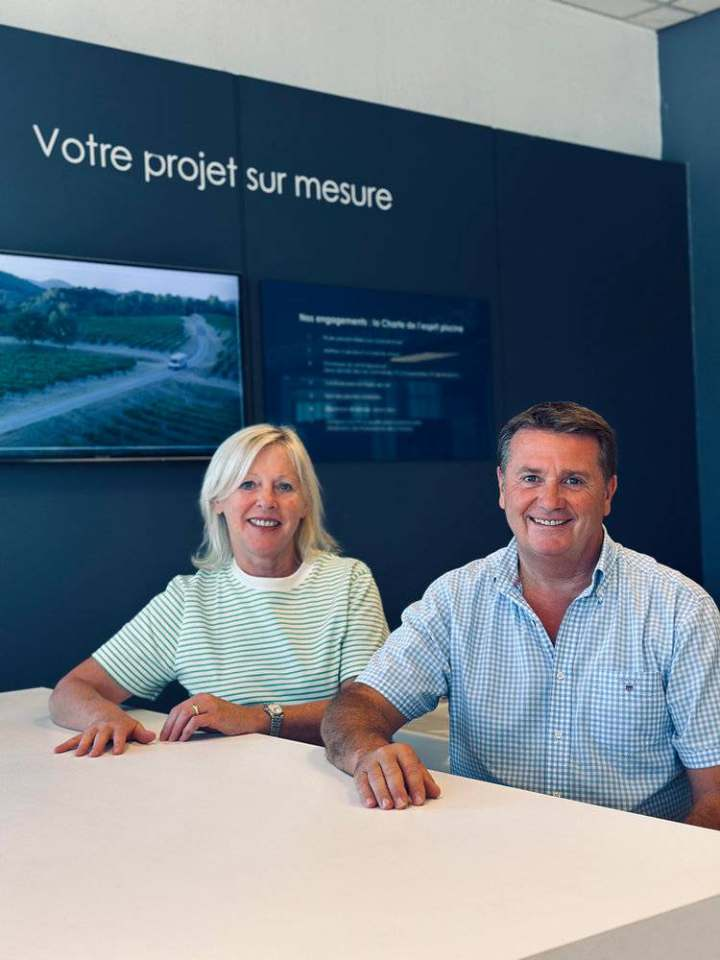
« »
G. Mayer ·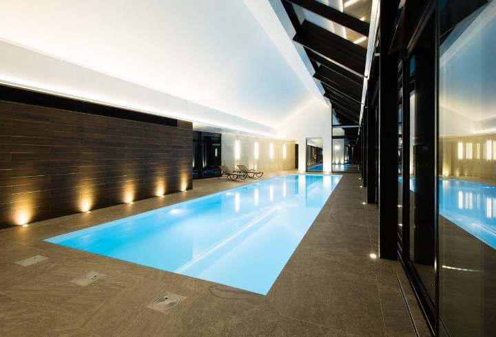
« » G. Mayer
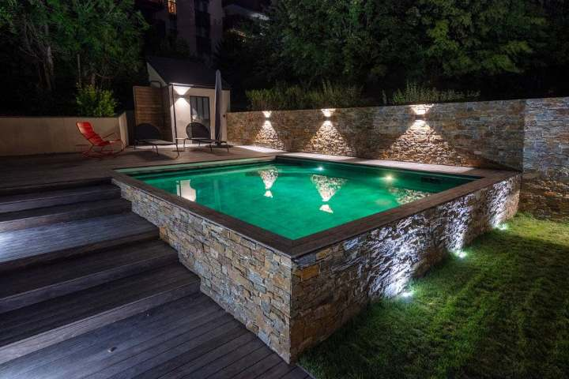
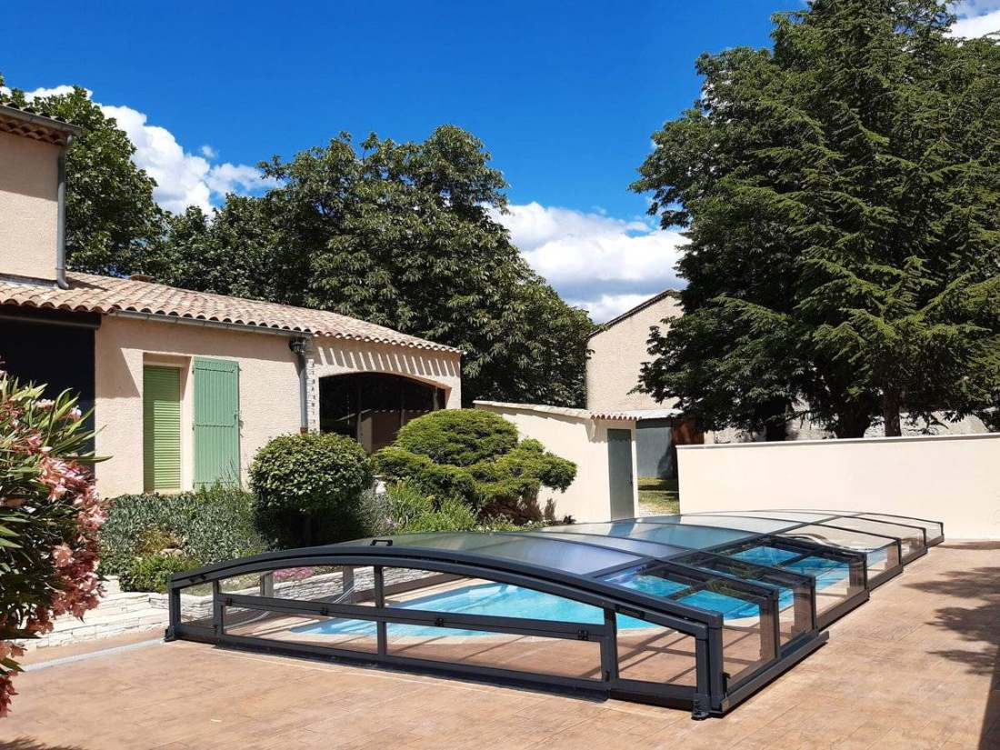
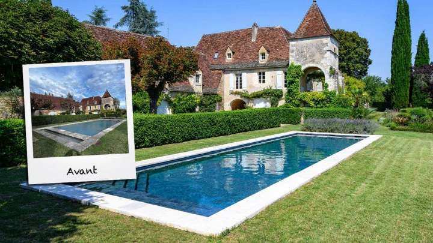
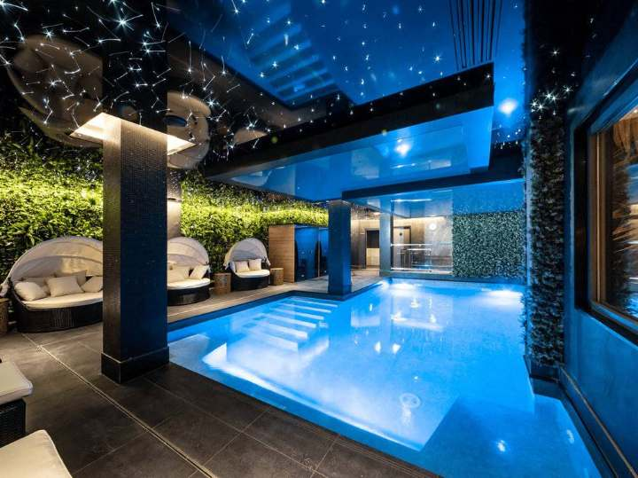
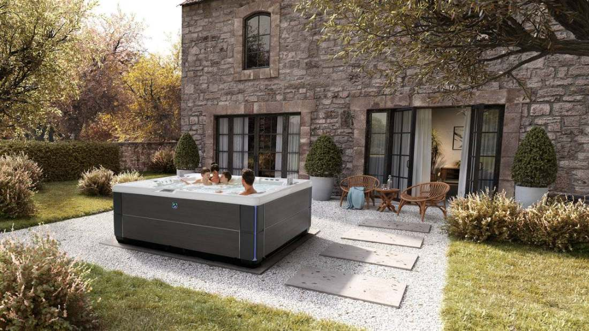
Hot Spring · Watkins Wellness
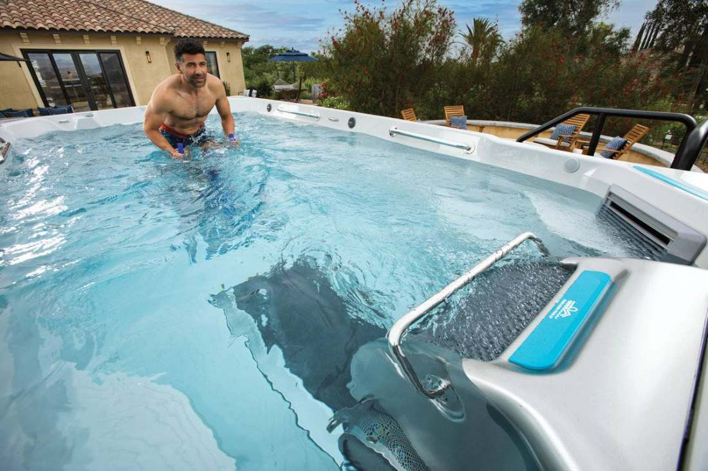
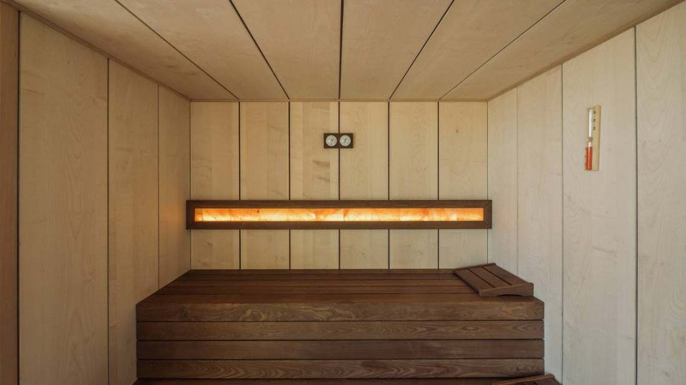
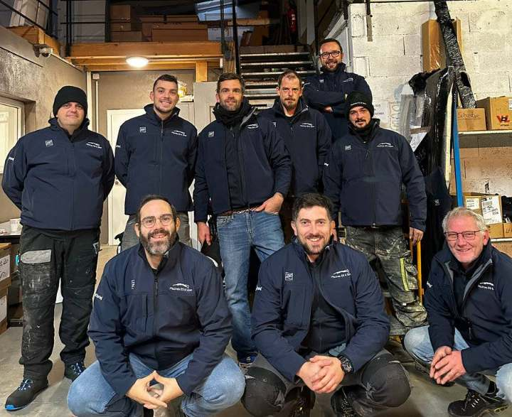
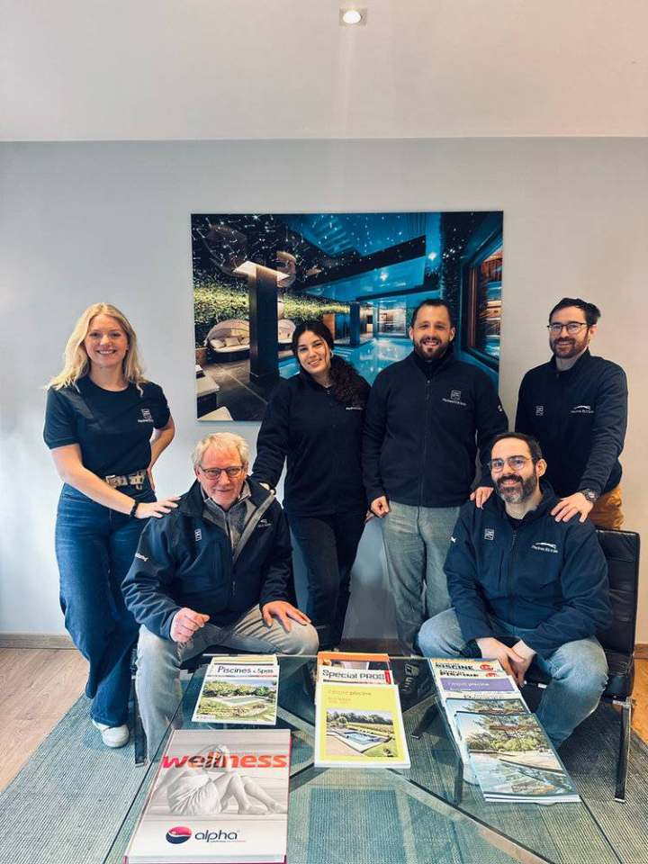